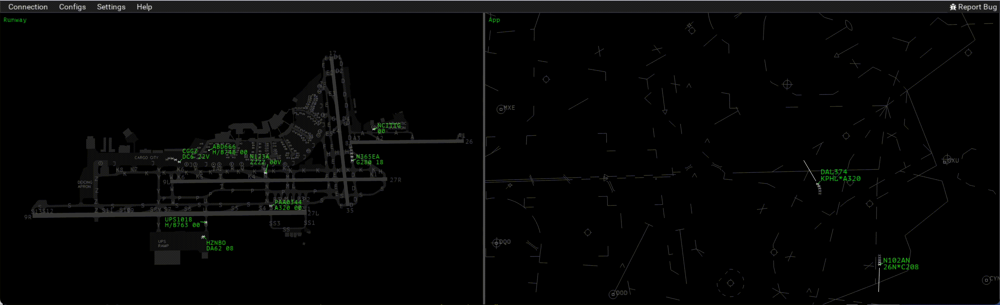

Vice
: a cross-platform, open-source, possibly-future VATSIM client

Introduction
An overview of the vice virtual air traffic control client, including its goals and influences.
Installation
How to download and install vice on your computer, whether it's a Mac or a Windows system.
Configuration
Configuring vice, including setting up sub-windows and specifying the ATC tools to have available in them.
Command-Line Interface
Using vice's command interface for controlling aircraft and accessing information.
ATC
How to control aircraft using vice. (Note: this is a hypothetical discussion for now, as vice cannot yet connect to VATSIM.)
FAQs
Frequently asked questions about vice–with answers!